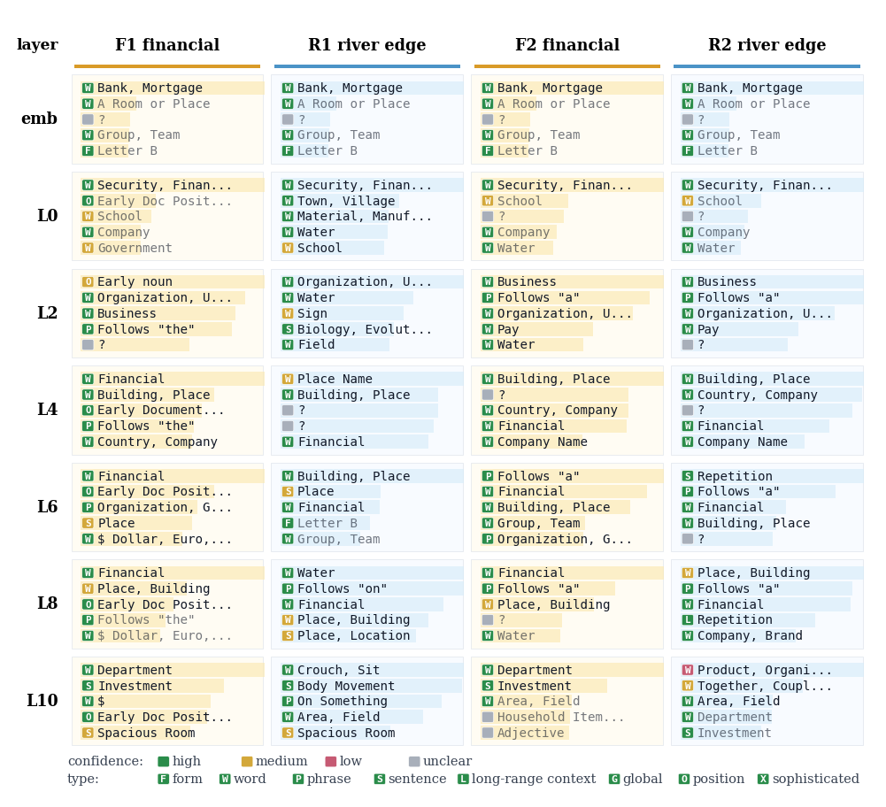
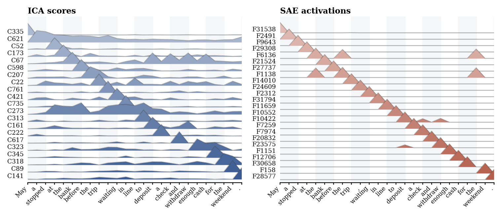
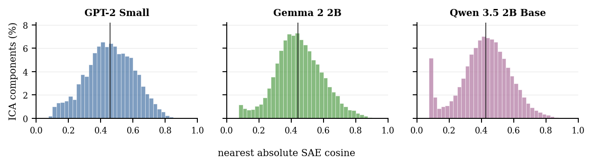
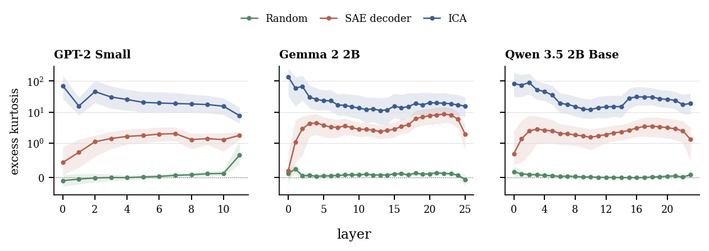
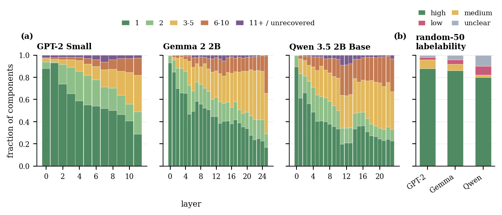
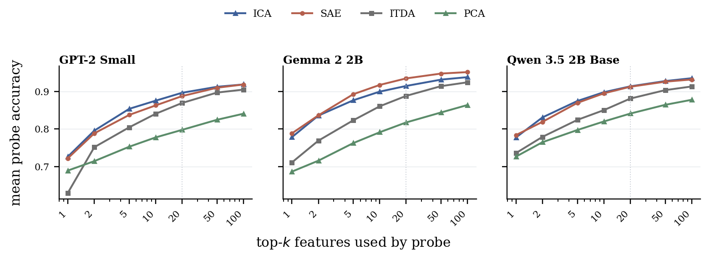
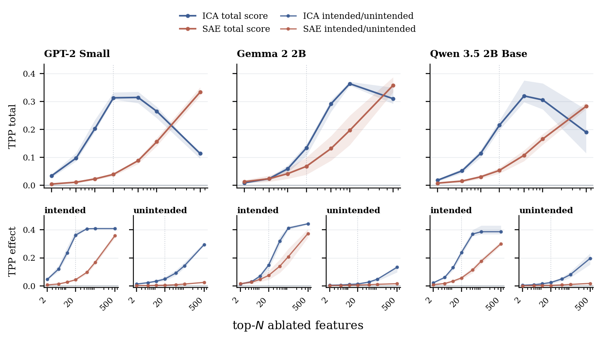

Independent components for LLM activations
ICA Lens
Interpreting language models without training another dictionary
A practical GPU FastICA pipeline for finding compact, non-Gaussian, human-inspectable directions in residual streams and embeddings.
The idea
Use ICA as a fast first pass before committing to a large SAE dictionary.
Sparse autoencoders are powerful, but each model, layer, activation site, and sparsity regime can require another trained dictionary. ICA Lens asks how much interpretable structure is already visible from activation geometry: normalize activations, fit a compact ICA basis, inspect the signed directions, then decide where heavier dictionary learning is worth it.
Guided cases
Open the live lens on hand-picked examples.
These cases are live Hugging Face Space links with model, layer, text, display settings, and selected components preloaded. They show the paper's main qualitative claim: ICA directions range from token-local forms to broader context-sensitive signals.
Human inspection
The same surface word decomposes differently by context.
The paper probes repeated uses of bank across financial and river-edge contexts. ICA exposes mixtures of lexical, syntactic, semantic, positional, and longer-context components at the target token, and the explorer lets readers inspect the signed scores and top examples directly.
Open this exact paragraph
ICA and SAE
Related lenses, different shapes.
SAEs learn large overcomplete dictionaries through reconstruction and sparsity losses. ICA returns a compact basis selected by non-Gaussian projection statistics. Some ICA components have close SAE neighbors; others are interpretable but weakly matched, which makes the two decompositions useful cross-checks rather than substitutes.


Evidence across models
Not just a few nice examples.
Across GPT-2 Small, Gemma 2 2B, and Qwen 3.5 2B Base, the paper checks whether ICA directions are statistically exceptional, interpretable to human analysts, complementary to public SAE dictionaries, and useful in SAE-style probing and intervention evaluations.




Try it
Use the hosted explorer, or run the release locally.
The hosted Space is the fastest route for inspection. The GitHub repo contains the released pipeline, artifact manifest, reproduction scripts, and a local FastAPI explorer for the mini or full databases.
uv sync
uv run python scripts/fetch_artifacts.py --models --databases
uv run python scripts/verify_artifacts.py
uv run python -m server.app --port 8001Citation
ICA Lens
@misc{liu2026icalens,
title = {ICA Lens: Interpreting Language Models Without Training Another Dictionary},
author = {Sida Liu and Feijiang Han},
year = {2026},
note = {Code and artifacts: https://github.com/liusida/ica-lens-paper}
}